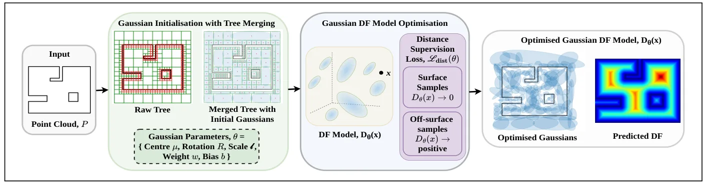
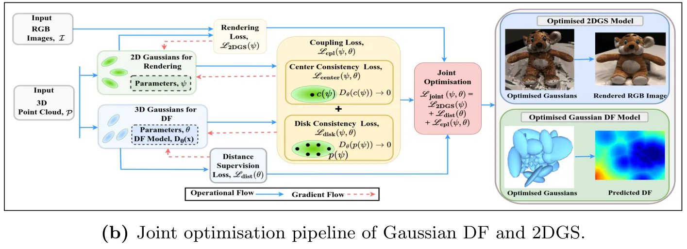

SplatlessDF：使用非渲染高斯的连续距离场建图SplatlessDF: Continuous Distance Field Mapping with Non-Splatting Gaussians
今天最贴近机器人建图和导航后端的论文，连接 Gaussian 表示、连续 DF、距离/梯度查询和规划接口；需进一步验证在线更新、闭环后地图一致性和大场景效率。
一句话工作总结
SplatlessDF 把高斯从渲染元素变成空间距离场 primitive，可查询连续距离和梯度，直接面向机器人导航与建图。
摘要
Gaussian Splatting 已证明可用可优化高斯高效表示场景以实现高质量重建与渲染。本文提出 SplatlessDF，一个连续 distance field 建图框架，它从空间而非光度角度使用各向异性高斯元素。SplatlessDF 直接参数化并优化高斯以恢复可微 DF，使机器人导航等下游任务可以在空间域查询距离和梯度。框架既可作为独立 DF-only 形式，也可与 2D Gaussian Splatting 结合，形成只基于 Gaussian primitives 的统一连续 DF、表面模型和光度渲染框架。实验显示，独立形式可高效准确查询距离/梯度，联合形式可同时改善渲染几何并建模连续 DF。
Recent Gaussian splatting (GS) methods have shown that scenes can be represented efficiently with optimisable Gaussians for high-quality reconstruction and rendering. In this paper, building on this principle, we introduce SplatlessDF, a continuous distance field (DF) mapping framework that uses anisotropic Gaussian elements from a spatial rather than photometric perspective. SplatlessDF directly parameterises the Gaussians and optimises to recover a differentiable DF, enabling distances and gradients to be queried in the spatial domain for downstream robotic tasks such as navigation. Furthermore, SplatlessDF can be coupled with 2D Gaussian splatting (2DGS), providing a unified framework based solely on Gaussian primitives that can learn continuous DF and surface models and supports photometric rendering. We consider two settings: a standalone DF-only formulation and a joint DF-rendering formulation coupled with 2DGS. Experiments show that the standalone formulation provides efficient and accurate distance and gradient queries, while the joint formulation improves rendering geometry and simultaneously models a continuous DF. These results highlight the potential of GS-style representations not only for surface modelling and rendering but also for mapping representations suited to robotic navigation.
中文解读摘录
- 链接：abs / PDF；作者：Monisha Mushtary Uttsha, Lan Wu, Teresa Vidal-Calleja；类别：cs.RO；采集 score=10。
- 核心思路：把 anisotropic Gaussians 从 photometric rendering primitives 改造成 spatial distance-field primitives，学习可微连续 DF，支持空间域距离与梯度查询。
- 方法要点：提供 DF-only standalone formulation，也可与 2D Gaussian Splatting 联合训练，同时获得 photometric rendering、surface model 和 continuous DF。
- 关注点：这是今天最贴近机器人导航/建图后端的论文；重点看 DF 查询延迟、梯度稳定性、动态更新能力、与局部规划/碰撞检测/ESDF 的接口，以及在稀疏或退化观测中的几何一致性。
图表/页面预览
{kind=link}

{kind=link}
